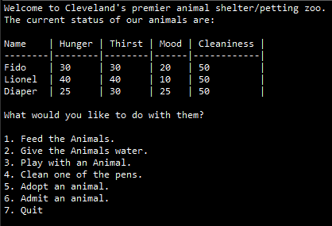
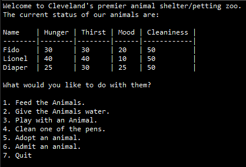

Virtual pet is an app where you create, then take care of, a virutal pet. You have to balance the values of the pet in order to keep it from dieing or running away.
Virtual pets shelter is an app that put virtual pets into a shelter. It take the previous app and put them into another class where you can manage more than one pet.
Virtual pets amok takes what virtual pet shelter did but instead categories pets between organic and robot. Orangic pets have to be fed and water while robotic one have to be oil periodically.